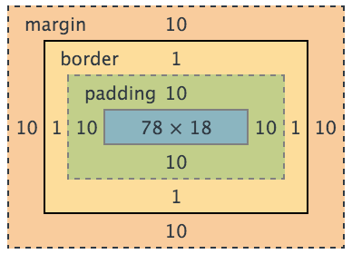

Web Programming Workshop
CSS
Share styles across elements and keep things DRY (Don't Repeat Yourself).
Selectors
/* Multiple selectors */
.message.active {
border-left: 2px solid blue;
padding-left: 10px;
}
/* Descendents */
.message .content {
color: blue;
}
/* Child */
.message > .content {
color: red;
}
/* Pseudo classes */
.reply:hover {
padding-left: 10px;
}
input:focus {
border-color: blue;
}
.reply:first-child {
font-style: italic;
}
.reply:last-child {
font-weight: 700;
}
.reply:nth-child(2n+1) {
text-transform: uppercase;
}Box Model
.box {
padding: 10px;
border: 1px solid black;
}
.bad {
width: 78px;
}
.good {
box-sizing: border-box;
width: 100px;
}/* It's usually a good idea to border-box everything */
*, *:before, *:after {
box-sizing: border-box;
}
Position
Absolute positioned element is positioned relative to its closest ancestor that is not statically positioned (i.e. not position: static)
, or if such an ancestor does not exist, the window.
.first {
/* This is the default value */
/* position: static; */
}
.second {
position: relative;
}
.close {
position: absolute;
top: 5px;
right: 10px;
}Drawing UI in CSS
.box {
/* Round corner */
border-radius: 10px;
/* Shadow */
box-shadow: 0 5px 7px rgba(0, 0, 0, .4);
/* Transform */
transform: rotate(30deg) scaleX(1.2);
/* Gradient */
background: linear-gradient(#c82829, #e4703f);
}You can use CSS to draw pretty complicated things.
Layout Activity
Implement the layout of left screen in this design:

Fork this pen to start.
Focus on the position and size of each UI component, and don't worry too much about details like shadows, icons and colors. Pay attention to which elements should be scrollable.
This tutorial is great for learning layouts in CSS
Flexbox is a more cutting-edge solution to CSS layout. Learn about it here!
Transition
Smooth and natural.
.button {
transition: background .25s;
}
.arrow {
transition: transform 2s;
}
.button:hover {
background: #db4848;
}
.button:active .arrow {
transform: translateX(20px) scale(2);
transition-duration: .25s;
}Font Icons
Infinitely scalable, easily stylable.
<span class="fa fa-cab"></span>
<span class="fa fa-train"></span>
<span class="fa fa-rocket"></span>
<span class="fa fa-ambulance"></span>
<span class="fa fa-shopping-cart"></span>Two great, easy-to-use font icon solutions:
- Font Awesome provides a comprehensive set of font icons.
- Icomoon App is a tool to make your icon font from various existing libraries.
Preprocessors
CSS is hard to write and harder to maintain, and preprocessors make it much easier.
// Variables
blue = #328ddc;
margin-large = 20px;
margin-small = 5px;
// Nesting
.message
margin: margin-large;
.reply
margin: margin-small;
// Mixins
info-box(color)
background: lighten(color, 95%);
padding: margin-large;
border-left: 5px solid color;
.tip
info-box(blue);
.reference
info-box(yellow);
JavaScript
Variables
// Primitive types
var num = 1;
var str = 'pizza';
var boo = false;
var nil = null;
var und = undefined;
// Object
var obj = {
key: 'value',
kee: 42,
kid: {
isGood: true,
},
kiwi: null,
};
// obj.key === obj['key']
// Arrays are special objects
var arr = ['value', 42, { isGood: true }, null];
// Functions are callable objects
var fn = function(thing) {
return 'I saw a ' + thing;
};
console.log(fn('squirrel'));
// IIFE (Immediately-Invoked Function Expression)
(function() {
console.log('Aloha');
})();
// Equals to
var sayAloha = function() {
console.log('Aloha');
};
sayAloha();
// Variables are function-scoped, not block-scoped
for (var i = 0; i < 10; i++) {}
// i === 10
var fn2 = function() {
var localVar = 5;
};
// localVar is not defined here
// Primitives are pass-by-value, objects are pass-by-reference
var doSomething = function(obj) {
obj.secret = 'Cannot tell you';
};
var luke = { name: 'Luke' };
doSomething(luke);
// luke.secret is exposed!
Always use triple equals to compare:
var go = token === user.token;
var stop = token !== user.token;
Asynchronous JavaScript
// Callback functions
var play = function() {
console.log('Play with cat');
};
var eatAnd = function(then) {
console.log('Eat pizza');
then();
};
eatAnd(play);
// Saving local variables with closure
// Asynchronous function
var getData = function(id, callback) {
setTimeout(function() {
var result = Math.random();
callback(result);
}, 50);
};
// Buggy version
for (var id = 0; id < 3; id++) {
getData(id, function(data) {
console.log(id, data);
});
}
// Correct version
for (var id = 0; id < 3; id++) {
// Save id with IIFE
(function(_id) {
getData(_id, function(data) {
console.log(_id, data);
});
})(id);
}
// Alternatively
[0, 1, 2].forEach(function(id) {
getData(id, function(data) {
console.log(id, data);
});
});
JavaScript: The Good Parts and Eloquent JavaScript are some good books to learn JavaScript.
ECMAScript 6
Latest standard of JavaScript with tons of great features.
// Block-scoped variables and const varialbes
for (let i = 0; i < 10; i++) {}
// i is not defined here
const lunch = 'pizza';
decided = 'salad'; // Error
// Arrow functions
const add = (a, b) => a + b;
// Template strings
const user = { name: 'Luke' };
const str = `Greetings ${user.name}`;
// Destructuring
const options = {
method: 'GET',
url: 'http://...',
};
const { method, url } = options;
const ajax = ({ method, url }) => {
// ...
};
// And much more
Adding Interaction
jQuery
A handy toolkit to help with manipulating the DOM and handling events, among other things.
// Selecting elements
var $user = $('.user');
var $name = $('.user .name');
var $img = $('.user > img');
// Traverse the DOM
$name.parent();
$name.closest('.user');
$user.children();
$user.siblings('.friend');
$user.siblings().filter('.friend'); // Same as above
// Manipulating the DOM
$user.addClass('friend');
$user.removeClass('foe');
var src = $img.attr('src');
$img.attr('src', newSrc);
var fontSize = $name.css('fontSize');
$name.css('fontSize', 100);
var name = $name.text();
$name.text('Luke');
$('<div>').text('Jedi').addClass('role').appendTo($user);
$name.remove();
// Animate the change
$img.fadeOut();
$name.slideUp(function() {
$name.show('slow');
});
// Handling events
$img.click(function() {
// Open image
});
$input.change(function() {
// Log the current value
console.log($(this).val());
});
$input.keydown(function() {
// Show suggestions
});
// Ajax
$.get('/api/friends', function() {
// Update friends list
});
See complete jQuery API doc here.
Avoid setting styles directly from jQuery. Instead, set classes in jQuery and let CSS handle the styles.
Form Validation Activity
Use jQuery to validate the name input. Show user if the input passes validation.
Fork this pen to get started.
UI As a Function of Data
{ name: 'Luke', inventory: [ 'Poncho' ] }
↓ ↓ ↓
-------------------------
| | Poncho |
| |--------------|
| LUKE | + Add more |
| | |
| | |
-------------------------
{ name: 'Luke', inventory: [ 'Poncho', 'Lightsaber' ] }
↓ ↓ ↓
-------------------------
| | Poncho |
| |--------------|
| LUKE | Lightsaber |
| |--------------|
| | + Add more |
-------------------------
Write a Like Button
Implement a like/unlike button, so that when user clicks on the heart, it toggles between 17 and 18.
Fork this pen to start.
Single Page Application
Web app that works like a native app. Gmail is a great example.
If you want to try out the coolest way of writing a web app, I strongly recommend React!